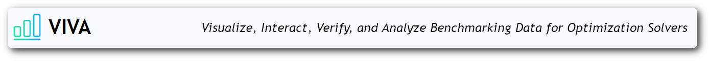
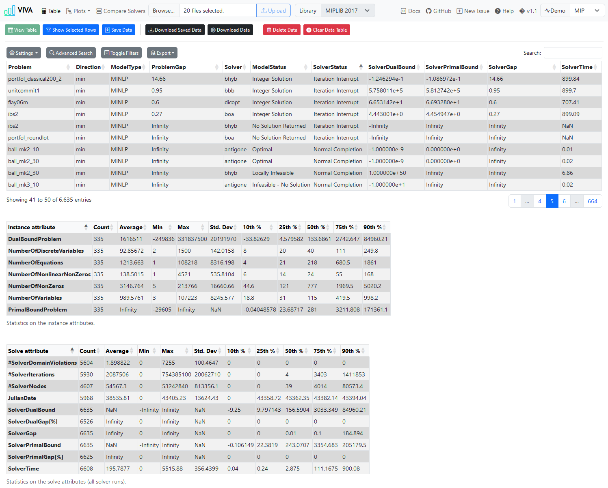

System Documentation



Building on the concept and implementation of PAVER 2.0, the main goal of VIVA is to allow end users to interact with their own uploaded benchmark data from mathematical optimization problems and their solvers. The data is presented in a tabular format, with the added ability to visualize specific results through various plots, making it easier to understand and interpret the data.
Demo-data is attained from miplib2010 examples. The .solu file data from the problem libraries MINLPLib, MIPLIB 2017 and MIPLIB 2010 can be accessed directly through a dropdown option in the navigation menu.
This project is developed using:
- TypeScript
- DataTables.js
- Chart.js
- Webpack
- Bootstrap & Bootstrap Icons
The application can be run without a live server since Webpack is responsible for bundling the files. It is also possible to install it as a Progressive Web Application by launching the project in a live server, navigating to the report page using a compatible browser, and installing it. Currently, this gives access to notifications when a table or graph has been successfully rendered with results. Support for offline functionality is also included in the PWA implementation. Additional PWA functionality will be added during development.

Disclaimer
Performance Note: Performance slowdowns may occur when handling a large number of files or particularly large datasets, as this application operates entirely in the browser without relying on a backend server to parse and process the files.
Display Note: While mobile-sized screens are supported, the most optimal experience is achieved using a larger display. A light and a dark theme are available.
Development Note: This project is still a work in progress, and therefore, bugs and unexpected behavior may occur.
1. Instructions for Using the Application
- Download the release ZIP and extract the contents, or clone the repository, or visit the web version at viva-app.xyz.
- Open the file:
report.htmlfound in the root directory. - Click "Browse" to upload results and select either:
- One or more result files in
.trcformat. .solu(best known primal and dual bounds for each instance) and.csv(instance properties) files can be uploaded for additional information.- A single
UserConfiguration.json(which can be created from this application).
- One or more result files in
- Optionally, select a problem library to use (MIPLIB or MINLPLib).
- Click "Upload".
- Use the "View All Results" or "View Plot" buttons to get a table or plot with the benchmark results, depending on the currently active page.
- Available plots include:
- Performance Profile (Absolute and relative)
- Solver Time per Solver
- Solver Time per Instance
- Number of Nodes
- Number of Iterations
- Termination Status
- Solution Quality
- Solution Time
- Compare a pair of solvers via the "Compare Solvers" page. Direct comparison on how many instances the solver time was better, worse, or equal.
1.1 General Button Functionality
- Save Data: Save the currently uploaded data to local storage. If filtering has been applied on the table page, then the currently visible table will be stored.
- Download Saved Data: Download the user configuration (
UserConfiguration.json). - Download Data: Customize the downloadable user configuration file.
- Delete Data: Delete the data from local storage.
1.2 Table Page Button Functionality
- View Table: View the table of the uploaded results.
- Show Selected Rows: View rows that have been selected from the table.
- Clear Data Table: Clear the current table.
- Settings:
- Show n rows: The number of rows to show in the table.
- Column Visibility: Select which columns to show or hide.
- Advanced Search: Create custom search queries.
- Toggle Filters: Show filters for each column.
- Export: Export the table as a CSV, copy table content to clipboard, or view it in the browser's print option.
1.3 Plot Pages Buttons Functionality
- View X: View the page-specific plot.
- Download Chart Data: Download the chart data.
1.4 Compare Solvers Page Buttons Functionality
- Compare Solvers: Show the comparison table between two solvers.
2. Supported Formats
2.1 .trc
The following header structure and order should be used in conjunction with .trc files, if no header is provided in the result files:
InputFileName
ModelType
SolverName
NLP
MIP
JulianDate
Direction
NumberOfEquations
NumberOfVariables
NumberOfDiscreteVariables
NumberOfNonZeros
NumberOfNonlinearNonZeros
OptionFile
ModelStatus
TermStatus
ObjectiveValue
ObjectiveValueEstimate
SolverTime
NumberOfIterations
NumberOfDomainViolations
NumberOfNodes
UserComment
For further information, see https://gams.com/latest/docs/UG_SolverUsage.html#UG_SolverUsage_TraceFile.
2.2 .json
The file should include dataSet and dataFileType, defaultTime and gapLimit are optional.
{
"dataSet": [
"alan,MINLP,knitro,CONOPT,CPLEX,43365.479,min,8,9,4,24,3,1,8,Error,2.925,2.925,0.142,0,0,18,#,2.925,2.925,2.925,2.925,0,0,0,0,0",
"ball_mk2_10,MINLP,knitro,CONOPT,CPLEX,43365.479,min,2,11,10,21,10,1,8,Error,0,2.22044604925031E-16,2.5,0,0,3070,#,0,2.22044604925031e-16,0,2.22044604925031e-16,0,0,0,0,0",
"ball_mk2_30,MINLP,knitro,CONOPT,CPLEX,43365.479,min,2,31,30,61,30,1,2,Error,0,-26.887733399442,900.034,0,0,42269,#,0,-26.887733399442,0,-26.887733399442,Infinity,Infinity,0,0,0",
"ball_mk3_10,MINLP,knitro,CONOPT,CPLEX,43365.489,min,2,11,10,21,10,1,13,Error,0,NA,NA,NA,NA,NA,#,0,-Infinity,0,-Infinity,Infinity,Infinity,0,NaN,NaN",
"ball_mk4_05,MINLP,knitro,CONOPT,CPLEX,43365.51,min,2,11,10,21,10,1,13,Error,0,NA,NA,NA,NA,NA,#,0,-Infinity,0,-Infinity,Infinity,Infinity,0,NaN,NaN",
],
"dataFileType": "trc",
"defaultTime": 900,
"gapLimit": 0.1
}
As for now, this structure has to be used for the dataSet. It will eventually be updated to a proper object.
3. Working with the Codebase
3.1 Prerequisites
Before getting started, make sure you have the following software installed on your machine:
Node.js: https://nodejs.org/
TypeScript: https://www.typescriptlang.org/
Webpack: https://webpack.js.org/
Install the required packages by running:
npm install
3.2 Bundling
Navigate to the project directory in your terminal and run:
npm run build
This builds the application with webpack and then writes the cache list and cache name into service-worker.js. The created bundle.js and main.css are located in Dist/. npm run check:sw fails if the generated block of service-worker.js is out of date.
Dev server can be run with:
npm start
3.3 Other Scripts
Run unit tests using Jest:
npm run test:functions
Run the unit tests with coverage:
npm run test:coverage
Run the browser tests with Playwright (run npm run build first, and npx playwright install chromium once):
npm run test:ui
Regenerate the HTML pages (report.html and Src/Pages/*.html) from Src/Templates, and check that they are up to date:
npm run build:pages
npm run check:pages
Lint the project files using ESLint:
npm run lint
To automatically fix linting issues:
npm run lint:fix
Generate documentation using TypeDoc:
npm run build:docs
Create a slimmed down release build using gulp:
npm run release
Create a slimmed down web release build using gulp:
npm run release:web